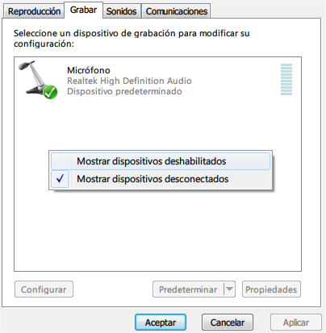
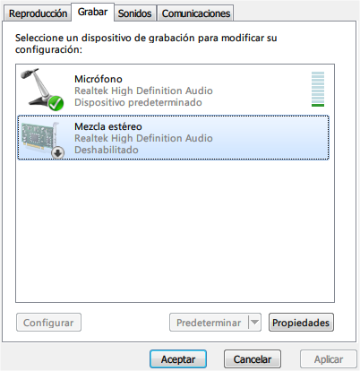
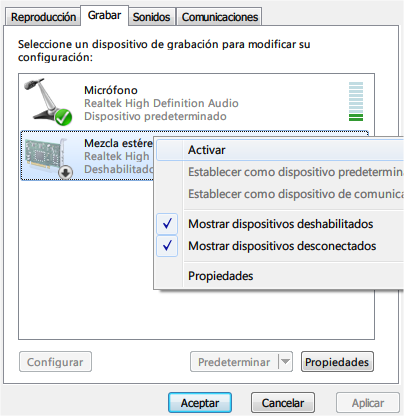
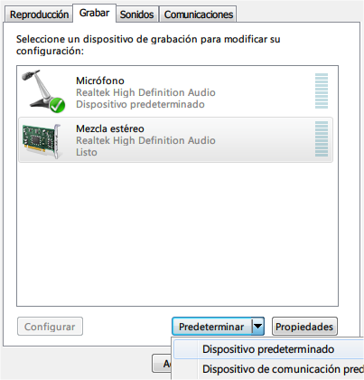
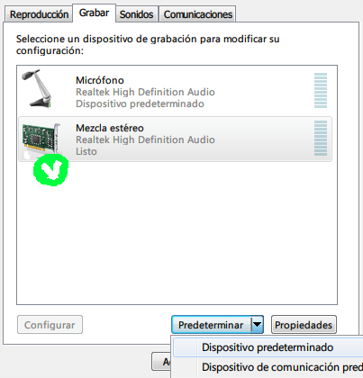

TUTORIAL STEREO MIX EN WINDOWS 7
Seguramente los que tenemos Windows 7 habremos notado que a diferencia del viejo XP este nuevo Sistema Operativo no dispone, por defecto, la opción Stereo Mix.
O al menos no es tan fácil de habilitarlo. En fin, no viene al caso desvirtuar. Al grano.
Este problema radica en que por defecto en Windows 7 no instalamos ningún driver sino que él mismo se tomó el trabajo de hacerlo y he aquí la respuesta. En dicha performance no dispone de esta opción.
SOLUCIÓN:
- Descargar manualmente el último drivers de la placa de sonido (en mi caso Realtek ALC888).
- Instalar el driver (.exe)
- Reiniciar la PC para que surtan efecto los cambios
- Ir a Dispositivos de grabación y hacer lo siguiente.
Botón derecho en la zona blanca y marcar “mostrar dispositivos deshabilitados”

Aparece “mezcla estéreo”

Sobre el ícono presionamos botón derecho y seleccionamos “activar”

Por último seleccionamos la entrada “mezcla estéreo” y presionamos en predeterminar “dispositivo predeterminado”

Listo el pollo, podeis usar el Stereo Mix.

Muchas gracias por tomarte el tiempo de leer todo este post, Fina.-.
Andaluzsoy